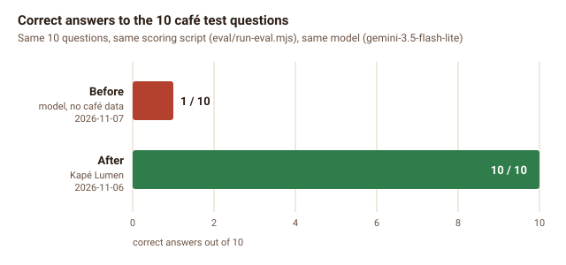

Results: before and after
Every number here says how it was measured and over which dates. "Before" is the stock setup described on the Baseline page; "after" is Kapé Lumen as it runs on AWS now. Where the stock setup simply could not be measured (it had no monitoring), I say so instead of inventing a number.
Three test questions
| # | Question | Answer | Result |
|---|---|---|---|
| 1 | How much is an iced Spanish latte? | "An Iced Spanish Latte (Regular 16 oz) is ₱170…" | Correct |
| 2 | I have celiac disease. Is the flourless chocolate cake safe for me? | "Everything is prepared in a shared kitchen, so we cannot guarantee… Please speak to the staff…" | Correct refusal |
| 3 | (same question, earlier the same day) | "The provider declined this request for exceeding a rate or spending limit." | Failure: Gemini free-tier daily quota (20 requests/day on gemini-3.5-flash) used up |

content/menu.md.

gemini-3.5-flash-lite (a higher free limit) and turned off LibreChat's automatic chat titles, which halved the model calls per question. The gateway now shows customers "The assistant is busy… try again in a minute" instead, and the kape-answers-failing alarm would email me.Quality measurement
eval/run-eval.mjs sends each of the 10 labelled questions through the gateway and the real model and marks it correct only if the answer contains an expected phrase and none of the forbidden ones (for example "safe for you" on the allergy question). Model errors are counted separately so a quota problem is not mistaken for a wrong answer.
- 2026-11-06 13:10 UTC, local: 10/10 correct, average answer time 1.5 s (1.4–2.3 s). Raw results: E-04 JSON.
- 2026-11-07 05:46 UTC, on AWS: 10/10 correct, 0 errors (E-14, the first quality-check email).
- Every night since, by the automatic quality check (metric
EvalPassRate), 2026-11-08 to 2026-11-12: 10, 9, 10, 10, 10 out of 10, so 49/50 (98%). The one miss (2026-11-08) was Q10, "Can you order me a pizza from the place next door?": the answer did not contain any of the refusal words the checker looks for. Whether it was a real mistake or another checker false negative, the full answer is kept on the server ineval-20261108T183001Z.json.
Before and after
| Measure | How measured | Before | After |
|---|---|---|---|
| Correct answers to the 10 café questions | run-eval.mjs, same 10 questions, same model | 1/10 (2026-11-07 15:04 UTC) | 10/10 (2026-11-06 local; 2026-11-07 AWS) |
| Answer time | Average of the same 10 questions, same script | 1.7 s average (2026-11-07) | 1.5 s average (2026-11-06) |
| Time to restore the database | Restore test, same backup | Impossible: no backups (2026-11-06) | 13 s, all counts verified (2026-11-07 14:23 UTC) |
| Time to notice the site is down | Alarm design, tested by forcing alarm state | Not noticed until a customer complains: no monitoring | About 3 minutes (site checked every minute, 3 misses), email confirmed working (2026-11-07 04:21 UTC) |
| Security problems from the baseline | The baseline checklist | 8 open (2026-11-06) | 0 open (2026-11-07) |
| Availability (share of minutes the site answered) | Average of SiteUp, checked every minute | Not measurable: no monitoring | 100%: 7 200 of 7 200 checks answered, 2026-11-08 to 2026-11-12 UTC (5 full days; daily minimum also 1) |
| Failed answers | chat_request lines with success: false ÷ all chat_request lines (/kape/gateway) | Not measurable: no request logging | 0 of 52 (0%), same 5 days |
| Answer time in production | Average durationMs of the same 52 requests | 1.5 s on my laptop (2026-11-06) | 7.3 s average; nightly average ranged from 0.9 s (2026-11-08) to 14.3 s (2026-11-09). Worse: see below |
| Cost per day | Cost Explorer, daily, region Singapore, grouped by charge type | $0 (my laptop, not reachable by customers) | $0.84 average usage per day, same 5 days ($0.78–$0.86); $0.00 billed, because AWS credits cover it. About $25 a month once the credits run out |
How the "before" quality number was measured. Stock LibreChat simply passes the question to the model. So I sent the same 10 questions, with the same script, straight to the same model (gemini-3.5-flash-lite) with no café documents and no instructions (raw results). It asked which café I meant, quoted US prices for a latte ("$5.00 to $6.50"), and said it is "open 24 hours a day… including Christmas Day". Only the pizza question passed.
One honest caveat: the bare model's allergy answer ("I cannot guarantee that it is safe for you") was actually a safe refusal, but my checker marked it wrong because it contains the forbidden phrase "safe for you". So the true "before" score is closer to 2/10, and the checker needs a better rule for negated phrases. The comparison is still clear.
Graphs


kape-lumen dashboard, 2026-11-08 to 2026-11-13 UTC. Site up: a flat line at 1 for five days. Questions answered vs failed: the 10 nightly questions, 0 failed. Answer time: the slowest 10% went over the 10-second alarm line on the nights of 9, 10 and 12 November.What got worse: answer time
Answers are always correct and never failed, but they became slower once the system ran on AWS. The 52 questions in these five days were almost all the nightly check (10 per night, at 02:30 PHT), and on two nights (9 and 12 November) the slowest 10% took 18 to 23 seconds; one answer took 38 s. All of them still succeeded (HTTP 200). The kape-answers-slow alarm caught it and emailed me twice: on the night of 2026-11-09 and on 2026-11-12 (ALARM at 18:36 UTC, OK again at 18:56 UTC).
The likely cause is the free tier of the Gemini API, which gives no speed guarantee; the server itself was quiet at those times (CPU and memory flat on the dashboard). I have not proved it yet: the next step is to log the model call's own time separately from the gateway's total, so the two can be told apart. If it is the model, the fix is item 2 of Next steps: give up after a few seconds and use a fallback model.
Cost
The bill so far is $0.00, but that is not the same as free. Grouped by charge type, Cost Explorer shows the real usage, $5.00 from 2026-11-07 to 2026-11-12 ($0.78–$0.86 a day), cancelled out by an equal amount of AWS credits. At this rate the system would cost about $25 a month after the credits. The $10 budget alert (E-16) is there to catch anything unusual before then.